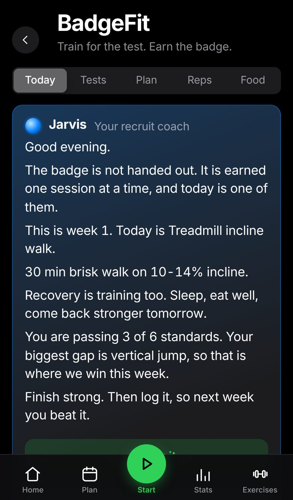
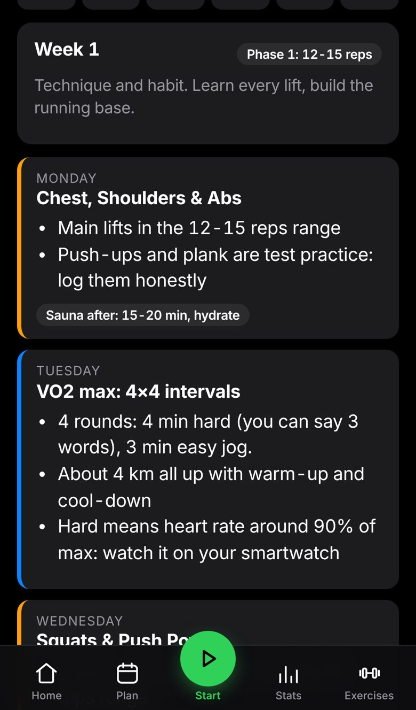
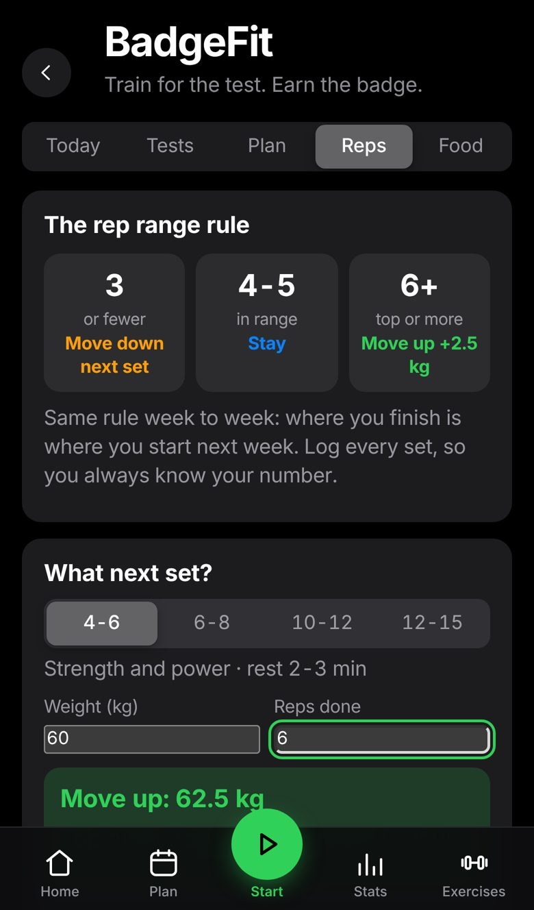
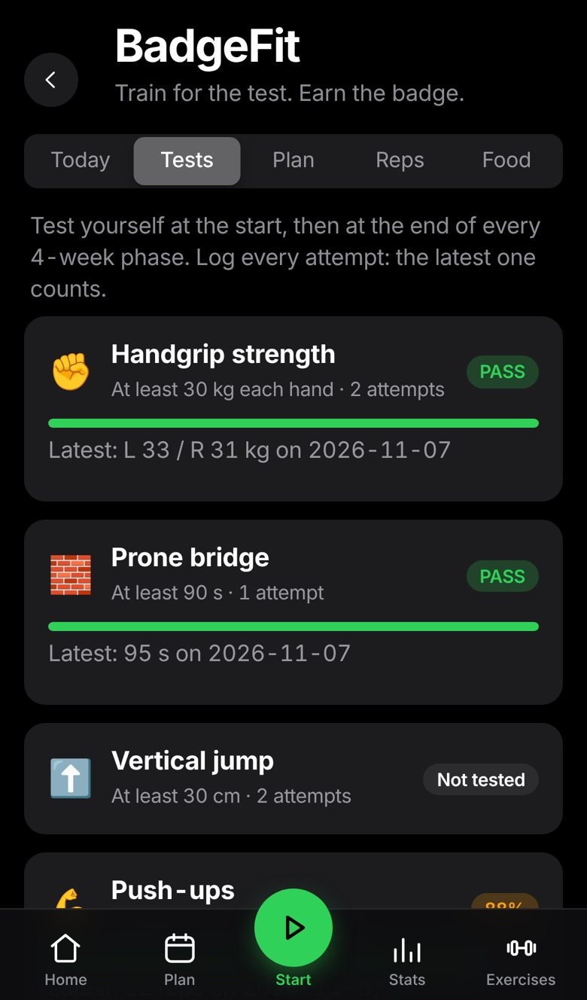

Handgrip
30 kg each hand
Best of 2 on a dynamometer. The academy asks for 35 kg, so train past it.
Police applicant fitness
A 12-week programme built by someone who has trained for police recruitment for over a year. Every standard tracked, every set logged, and Jarvis, your AI recruit coach, in your corner every single day.
Works on iPhone, Android and the web. Syncs to Apple Watch, Wear OS and Garmin.

“Every rep you press into that bar is you pressing into the life you want.”
Jarvis, your recruit coachThe physical test most applicants face. Log every attempt and watch your readiness climb.
30 kg each hand
Best of 2 on a dynamometer. The academy asks for 35 kg, so train past it.
90 s
Head, hips and heels in one line. Break at the hips and the clock stops.
30 cm
Standing reach to jump height. Built with squats and jump squats.
25 reps
Strict form, on toes or knees, one attempt.
≤ 20 s
From a prone start, weave the cone course. Best of 2.
Level 7.1
We train you to 7.2 and beyond, so the pass feels comfortable.
Standards differ between states and change over time. Always check your service's current requirements.

Beginner or intermediate, the plan builds itself into your app as real workouts with automatic progression.
Simple, honest progression. You always know what to lift next.
Pick a range (4-6, 6-8, 10-12 or 12-15). Hit the top and the weight goes up next set. Fall short and it comes down. Where you finish this week is where you start next week, and the app remembers for you.

A daily briefing read aloud, and a coach you can ask anything.
Your level, your week, your latest test results. Ask “what should I work on?” and Jarvis names your biggest gap in real numbers.
Motivating, never fluffy. Practical answers first, then the push you need to go again.
Tap “Hear it” and your briefing is read aloud before you train. Works offline.

Your daily calories, protein, carbs, fat and water, worked out from your weight and goal.